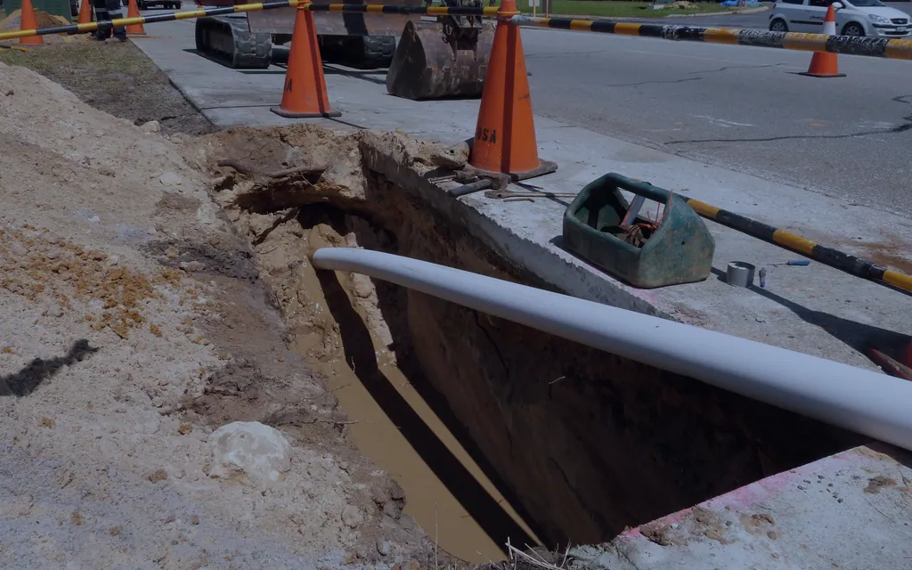
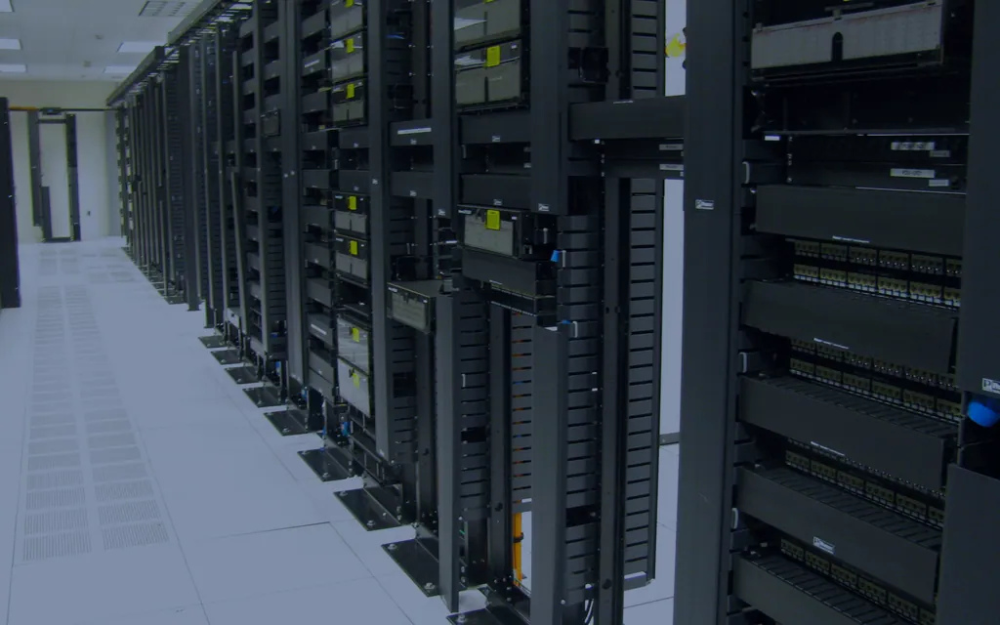
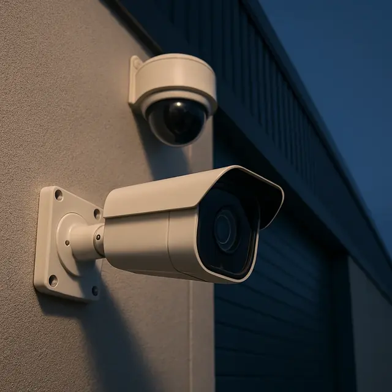

Outside-plant fiber, with route, permit, and right-of-way coordination handled together.
OSP Fiber Infrastructure & Route/Permit/ROW Coordination
Explore this service →
Hybridata's service paths help commercial project teams organize the next infrastructure conversation around the site, approved requirements, and defined scope.
Route information, facility conditions, requirements, field records, and system responsibilities enter the same coordinated scope without becoming copies of the same page.
Outside-plant fiber, with route, permit, and right-of-way coordination handled together.

Structured cabling and data center fiber for your facility.

Full network design, plus on-site surveys, design, and audits of your facility.


Access control and surveillance systems, cabled and connected to your network.

We survey your space, design your wireless network in Ekahau, and install every access point to spec.
The request pathway follows the information needed for the next responsible review.
Use a consultation when requirements, open questions, decision ownership, or scope need definition before a site review.
Request ConsultationUse a site survey when an existing facility, proposed route, room, pathway, opening, or visible condition is central to the scope conversation.
Request a Site SurveyPTP, audio/video, paging, sound masking, and electrical services are offered alongside the main paths. Supporting capabilities are discussed through the relevant project context.
Point-to-point wireless links between buildings or sites.
Ask about this service →Audio/video systems for your commercial spaces.
Ask about this service →Paging systems for your facility.
Ask about this service →Sound masking (white noise) for your space.
Ask about this service →Electrical services for your project.
Ask about this service →A supporting consideration when supplied equipment, available information, and project responsibilities need clarification.
Discuss through the relevant service path →A supporting coordination topic for commercial construction or remodel conversations.
Discuss through the relevant service path →A supporting project stage for documented transitions, records, and handoff requirements.
Discuss through the relevant service path →A supporting discussion for installs, moves, adds, changes, and lifecycle questions.
Discuss through the relevant service path →A supporting infrastructure topic when power or pathway questions belong in the project conversation.
Discuss through the relevant service path →Hybridata begins with the real facility, approved information, project parties, and open questions. Methods, records, timing, and results are not treated as universal deliverables.
The useful starting point is the service path closest to the next project decision.
Commercial infrastructure planning